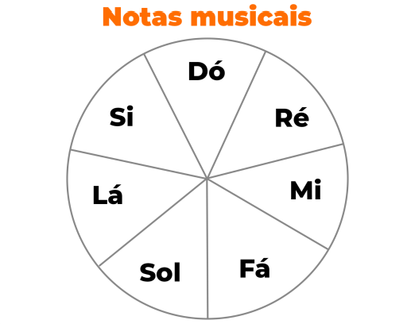

O que são notas musicais?
As notas musicais são os elementos básicos utilizados para construir melodias e harmonias. Elas representam diferentes alturas de sons e são fundamentais para a criação de qualquer música.
As sete notas musicais

Acidentes Musicais
Além das notas naturais (Dó, Ré, Mi, Fá, Sol, Lá, Si), existem os acidentes musicais, que são símbolos que alteram a altura das notas. Os acidentes mais comuns são o sustenido (#) e o bemol (b). O sustenido eleva a nota em meio tom, enquanto o bemol abaixa a nota em meio tom.